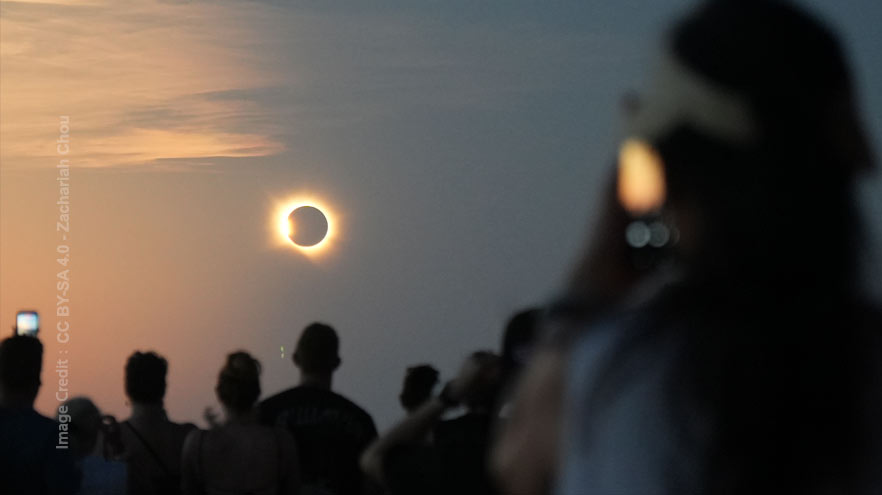
کسوفهای آینده در ایران
مروری بر پنج کسوف پیش رو در ایران، از گرفت جزئی سال آینده تا شگرفترین خورشیدگرفتگی تاریخ ایران در ۱۴۱۲
جزئیات بیشتر ↗راهنمای رصد رویدادهای آسمان و آخرین اطلاعات از اجرام نوظهور آسمان شب

مروری بر پنج کسوف پیش رو در ایران، از گرفت جزئی سال آینده تا شگرفترین خورشیدگرفتگی تاریخ ایران در ۱۴۱۲
جزئیات بیشتر ↗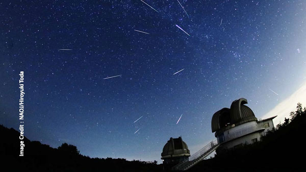
میانههای تابستان دوباره از راه رسیده است و همین حالا که مشغول خواندن این کلمات هستید کره زمین مانند کودکی که از میان گندمهای قد کشیده مزرعهای تابستانی میگذرد، در حال گذری پرسرعت از درون ذرات ریزدانهایست که بارش شهابی مشهورِ پرساووشی را موجب میگردند.
جزئیات بیشتر ↗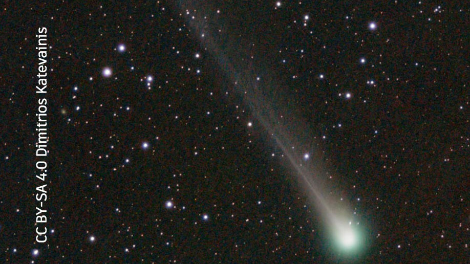
این شبها همزمان با ورود نیمکره شمالی زمین به فصل پاییز دو دنبالهدار نوظهور خود را خرامان به آسمان شمالی رساندهاند.
جزئیات بیشتر ↗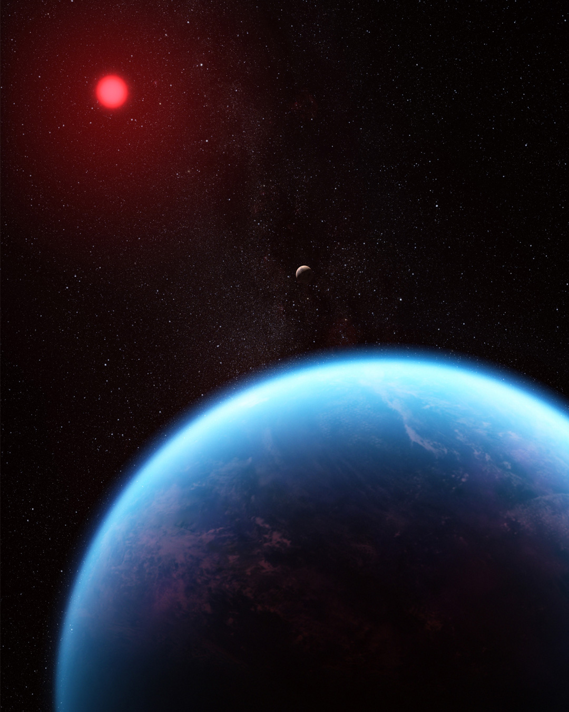
روزی گرم و آفتابی در کنار دریایی آرام مشغول قدم زدن هستید و همزمان که نسیمِ مرطوب ساحل را در سینه فرو میدهید بوی خوش دریا را در ذهن خود مرور میکنید. این بوی خاطرهانگیز از جمله نشانههای حیاتِ اولیه بر روی کرهی زمین است که از فعالیت میلیونها باکتریِ حیاتبخش و فیتوپلانگتونها منشاء میگیرد.
جزئیات بیشتر ↗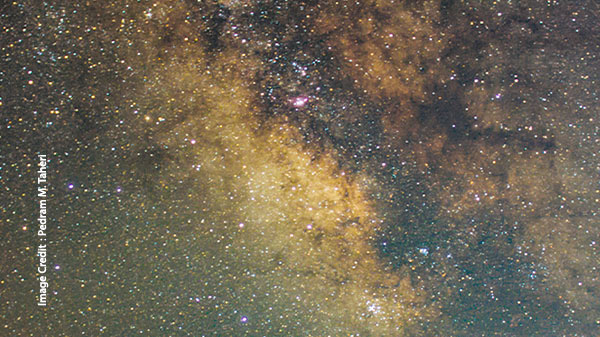
آسمانی کاملاً تاریک واقعاً چند ستاره در خودش جا داده؟ عددی که شاید حدس نمیزدید، از زبان یک ستارهشناس.
جزئیات بیشتر ↗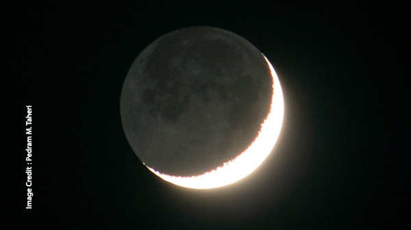
با آغاز هر ماهِ نو مشاهدهی هلال ماه بر بلندای افق غربی شاید پدیدهای عادی بهنظر برسد. اما بار دیگر که هلال ماه را بر فراز خانهاتان یافتید با دقتی بیشتر ماه را نظاره کنید. در سوی تاریک ماه رد نوری را خواهید یافت که منشاء آن سیارهی زندگیبخش خودمان ، زمین است.
جزئیات بیشتر ↗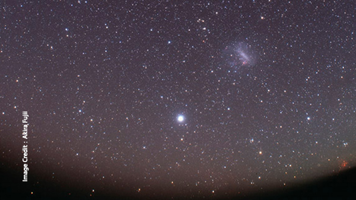
ستارهی سهیل از اجرام تابناک آسمان شب است و به عنوان دومین ستارهی درخشان بعد از شباهنگ شمرده میشود . اما رصد آن از ایران کاریست بس دشوار! به همین خاطر نماد دیریابی و دور از دسترس بودن است و در جغرافیای منطقهی ما با فرهنگ و ادبیات عامه پیوندی دیرپا دارد.
جزئیات بیشتر ↗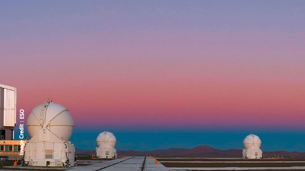
تصور کنید هنگام غروب خورشید کنار ساحلی در حال قدم زدن هستید و سایهی شما هم روی شنهای ساحل با شما همقدم است و هرچه خورشید پایینتر می رود سایهی شما هم کشدارتر می شود. شاید باورش دشوار باشد اما در همین لحظه می توانید سایهای عظیمتر را هم در اطراف خود تشخیص دهید ؛ سایهی سیارهی زمین!
جزئیات بیشتر ↗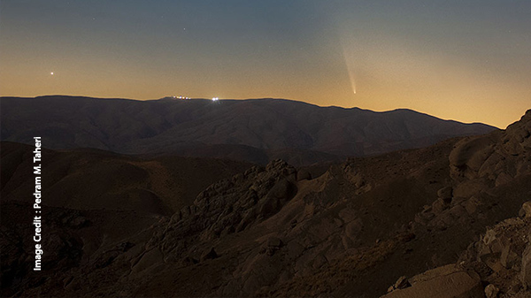
ا نزدیک شدن به روزهای پایانی این تابستان به غایت گرم ، آسمان تاریک شب های پاییز از حالا خود را برای میهمانی سرزده از اعماقِ منجمدِ منظومه ی شمسی آماده می کند.
جزئیات بیشتر ↗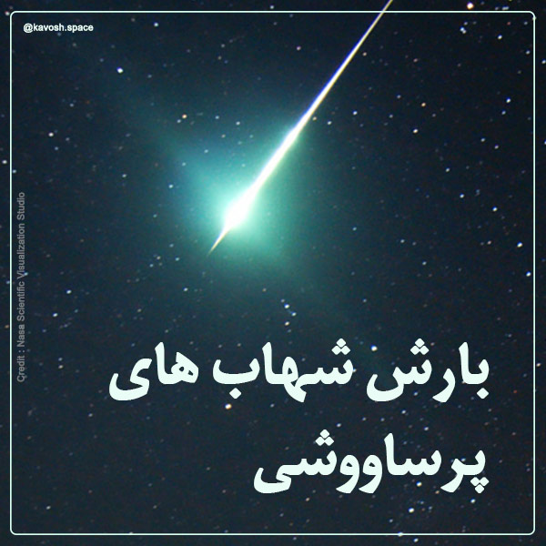
فصل تابستان بهترین فرصت است برای شناختن طبیعت آسمان شب .شب هایی که کوتاه است اما پر بار و خاطره انگیز و بدور از سرمای طاقت فرسای فصول دیگر و البته مملو از رویدادهای شگفت.
جزئیات بیشتر ↗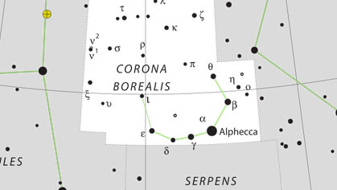
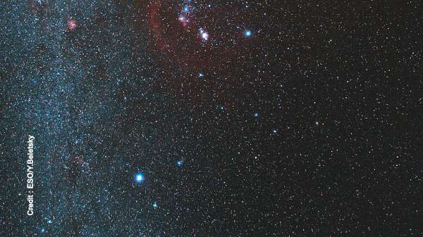
با ورود به آخرین فصل سال ، آسمان شب واپسین پرده ی پر فروغ خود را به نمایش می گذارد. فوجی از درخشان ترین ستارگانْ در پهنه ی آسمانی که احتمالا بارش های فصلی آن را از هر غباری شسته و سرما و بادهای زمستانی شفافیتی به آن بخشیده که بی هیچ اغراقی در هیچ زمانی از سال نمی توان چنین آسمان شفاف و پر ستاره ای را یافت.
جزئیات بیشتر ↗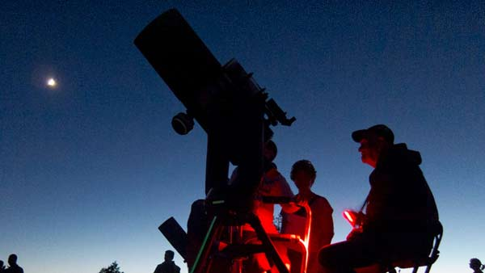
ممکن است برایتان سوال پیش بیاید که چگونه می شود رصدگران غیرحرفه ای آسمان شب بتوانند در این دوران با تلسکوپ هابل و جیمز وب و ناوگان پیشرفته ای که طی یک دهه آینده به آنها اضافه خواهد شد رقابت کنند؟
جزئیات بیشتر ↗